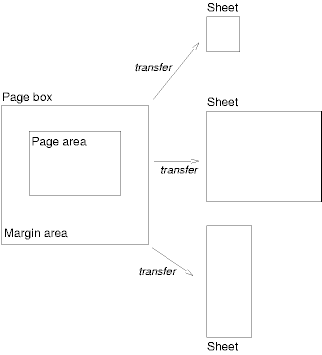

Содержание
Страничный носитель (например, бумага, плёнка, страницы , выводимые на экране компьютера и т.п.) отличается от непрерывного носителя тем, что содержимое документа разделяется на одну или более абстрактных страниц. Чтобы обрабатывать разрывы страниц, CSS2 расширяет модель визуального форматирования следующим образом:
Страничная модель CSS 2
специфицирует, как форматируется документ
в пределах прямоугольной области - страничного бокса - который
имеет конечные ширину и высоту. Страничный
бокс не обязательно соответствует
реальному листу\странице, на
котором документ в конце концов будет
выведен (бумага, плёнка, экран и т.п.).
Страничная модель CSS специфицирует
форматирование в страничном боксе, но за
перенос страничного бокса на лист отвечает пользовательский агент (ПА).
Некоторые возможности переноса:
Хотя CSS2 не специфицирует то, как ПА переносят страничные боксы на листы, не даётся также и определённого механизма для того, чтобы сообщить ПА о размерах и ориентации целевого листа.
Страничный бокс это прямоугольный регион, содержащий две области:
Примечание. В CSS2 свойства рамки и заполнения не применяются к страницам; это возможно в будущем.
Авторы специфицируют размеры, ориентацию, поля и т.п. страничного бокса в правиле @page. Правило @page состоит из ключевого слова "@page", селектора станицы (и, без пробелов, возможного псевдокласса страницы) и блока объявлений (находящихся в т.н. контексте страницы).
Селектор страницы специфицирует, для каких страниц объявления применяются. В CSS2 селекторы страницы могут означать первую страницу, все левые страницы, все правые страницы или страницу с определённым именем.
Размеры страничного бокса
устанавливаются свойством 'size'.
Размеры области страницы - это размеры
страничного бокса минус область полей.
Следующее правило @page устанавливает размер страничного бокса в 8.5 x 11 дюймов и создаёт поле '2см' со всех сторон между краем страничного бокса и областью листа:
@page { size 8.5in 11in; margin: 2cm }
Свойства полей ('margin-top', 'margin-right', 'margin-bottom', 'margin-left' и 'margin') применяются внутри контекста страницы. На следующей диаграмме показаны соотношения между листом, страничным боксом и полями страницы:
 [D]
Вычисленное значение полей бокса вверху или внизу области страницы - '0'.
Контекст страницы не имеет никаких указаний о шрифте, так что единицы измерения 'em' и 'ex' не допускаются. Процентные значения свойств полей относительны к размерам страничного бокса; для левого и правого полей - они соотносятся с шириной страничного бокса, а для верхнего и нижнего полей - к высоте страничного бокса. Все другие единицы измерения, ассоциированные с соответствующими свойствами CSS2, являются допустимыми.
Из-за негативных значений полей (у страничного бокса или у элементов) или абсолютного позиционирования содержимое может оканчиваться вне страничного бокса, но это содержимое может быть "вырезано" - ПАгентом, принтером или, наконец, бумажным ножом.
| Значение: | <length>{1,2} | auto | portrait | landscape | inherit |
| Начальное: | auto |
| Применяется: | к контексту страницы |
| Наследуется: | N/A |
| Процентное: | N/A |
| Носитель: | визуальный, страничный |
Это свойство специфицирует размер и ориентацию страничного бокса.
Размер страничного бокса может быть или "absolute/абсолютным" (фиксированный размер), или "relative/относительным" (масштабируемым, т.е. соответствующим имеющимся размерам листа). Относительные страничные боксы позволяют ПА масштабировать документ и оптимально использовать целевые размеры.
Три значения свойства 'size' создают относительный страничный бокс:
Здесь внешний край страничного бокса будет выровнен с целевым. Процентные значения свойства 'margin' - относительны к целевым размерам, поэтому, если целевые размеры - 21.0см x 29.7см (т.е. A4), поля будут 2.10см и 2.97см.
@page {
size: auto; /* auto это начальное значение */
margin: 10%;
}
Измеряемые значения свойства 'size' создают абсолютный страничный бокс. Если специфицировано только одно значение, оно устанавливает и ширину, и высоту страничного бокса (т.е. квадратный бокс). Поскольку страничный бокс является начальным содержащим блоком, процентные значения для свойства 'size' не допускаются.
@page {
size: 8.5in 11in; /* ширина - высота */
}
В этом примере устанавливаются: ширина страничного бокса - 8.5 дюймов и высота - 11 дюймов. Такой страничный бокс требует размеров целевого листа 8.5"x11" или больше.
ПА могут позволять пользователям контролировать перенос страничного бокса на лист (например, поворачивать абсолютный страничный бокс при печати).
Если страничный бокс не вмещается в размеры целевого листа, ПА может:
ПА должен запрашивать у пользователя подтверждение на эти операции.
Если страничный бокс имеет размеры меньше целевых, то ПА может размещать страничный бокс в любом месте листа. Однако рекомендуется, чтобы страничный бокс центрировался на листе, поскольку это выровняет сдвоенные страницы и исключит случайную потерю информации, расположенной близко к краю листа.
| Значение: | [ crop || cross ] | none | inherit |
| Начальное: | none |
| Применяется: | к контексту страницы |
| Наследуется: | N/A |
| Процентное: | N/A |
| Носитель: | визуальный, страничный |
При высококачественной печати маркировка часто помещается вне страничного бокса. Данное свойство специфицирует, должны ли знаки крестика или обрезки, или оба, отображаться сразу за краем страничного бокса.
Знаки
обрезки обозначают место, где
страница должна быть обрезана.
Знак "крестик"
(известный также как знак регистрации)
используется для выравнивания листов.
Маркировка видна только на абсолютных страничных боксах (см. свойство 'size'). При относительных страничных боксах, страничный бокс будет выровнен с целевым, а маркировка будет находиться за пределами области печати.
Размеры, стиль и расположение крестиков зависят от ПА.
При печати двухсторонних документов страничные боксы левой и правой страниц должны различаться. Это можно обозначить с помощью двух псевдоклассов CSS, которые могут быть определены в контексте страницы.
Все страницы автоматически классифицируются ПАгентами на псевдоклассы :left или :right.
@page :left {
margin-left: 4cm;
margin-right: 3cm;
}
@page :right {
margin-left: 3cm;
margin-right: 4cm;
}
Если даны разные объявления для левых и правых страниц, ПА обязан использовать эти объявления, даже если ПА не переносит страничные боксы на левый и правый листы (например, для принтера, имеющего только одностороннюю печать).
Авторы могут специфицировать также стиль для первой страницы документа псевдоклассом :first:
@page { margin: 2cm } /* Все поля установлены в 2см */
@page :first {
margin-top: 10cm /* Верхнее поле на первой странице - 10см */
}
Является ли первая страница документа :left или :right, зависит от направления письма в документе и находится вне пределов рассмотрения данного документа. Однако, чтобы форсировать первую страницу в :left или :right, авторы могут вставить разрыв страницы перед первым генерируемым боксом (например, в HTML, специфицировать это для элемента BODY).
Свойства, специфицированные в :left (или :right) в правилах @page, переопределяют те же свойства, специфицированные в правиле @page и не имеющие специфицированного псевдокласса. Свойства, специфицированные в :first в правиле @page, переопределяют те же свойства, специфицированные в :left (или :right) в правилах @page.
Примечание. Добавление объявлений в псевдоклассы :left или :right не указывает, выходит ли документ на принтер одно- или двухсторонним (это находится вне рамок данной спецификации).
Примечание. В будущих версиях CSS возможно появление других псевдоклассов страницы.
При форматировании содержимого модели страницы, часть содержимого может выйти за границы страничного бокса. Например, элемент, чьё свойство 'white-space' имеет значение 'pre', может генерировать бокс, который окажется шире страничного бокса. Также, если боксы позиционированы абсолютно, они могут оканчиваться в "несогласованном" месте. Например, изображения могут быть размещены у края страничного бокса или на 100,000 дюймов ниже страничного бокса.
Спецификация точного форматирования таких элементов находится вне пределов рассмотрения данного документа. Однако мы рекомендуем, чтобы авторы и ПА учитывали следующие общие принципы, касающиеся содержимого вне страничного бокса:
В данном разделе разъясняется форматирование страниц в CSS2. Пять свойств указывают, где ПА может или должен разрывать страницы и на какой странице (левой или правой) должно выводиться последующее содержимое. Каждый разрыв страницы заканчивает вывод в текущем страничном боксе и вызывает размещение оставшихся частей дерева документа в новом страничном боксе.
| Значение: | auto | always | avoid | left | right | inherit |
| Начальное: | auto |
| Применяется: | к элементам уровня блока |
| Наследуется: | нет |
| Процентное: | N/A |
| Носитель: | визуальный, страничный |
| Значение: | auto | always | avoid | left | right | inherit |
| Начальное: | auto |
| Применяется: | к элементам уровня блока |
| Наследуется: | нет |
| Процентное: | N/A |
| Media: | визуальный, страничный |
| Значение: | avoid | auto | inherit |
| Начальное: | auto |
| Применяется: | к элементам уровня блока |
| Наследуется: | да |
| Процентное: | N/A |
| Media: | визуальный, страничный |
Значения этих свойств имеют следующий смысл:
Потенциально размещение разрыва страницы
находится под влиянием свойства 'page-break-inside'
родительского элемента, свойства 'page-break-after'
предыдущего элемента и свойства 'page-break-before'
последующего элемента. Если эти свойства
имеют значения, отличные от 'auto', то значения
'always', 'left' и 'right' получают преимущество перед
'avoid'.
См. в разделе о допустимых разрывах страниц
точные правила того, как эти свойства могут
форсировать или подавлять разрыв страницы.
| Значение: | <identifier> | auto |
| Начальное: | auto |
| Применяется: | к элементам уровня блока |
| Наследуется: | да |
| Процентное: | N/A |
| Носитель: | визуальный, страничный |
Свойство 'page' можно использовать для спецификации определённого типа страницы, на которой элемент должен быть выведен.
Все таблицы будут размещены на правой стороне страницы с ориентацией landscape:
@page rotated {size: landscape}
TABLE {page: rotated; page-break-before: right}
Свойство 'page' работает так: если бокс блока с инлайн-содержимым имеет свойство 'page', отличное от аналогичного свойства предшествующего бокса блока с инлайн-содержимым, тогда один или два разрыва страницы вставляются между ними, и боксы после разрыва отображаются в страничном боксе именованного типа. См. ниже "Форсированные разрывы страниц".
В этом примере две таблицы отображаются на landscape-страницах (или на одной странице, если входят), и тип страницы "narrow" вообще не используется, вопреки установкам в DIV:
@page narrow {size: 9cm 18cm}
@page rotated {size: landscape}
DIV {page: narrow}
TABLE {page: rotated}
с этим документом:
<DIV> <TABLE>...</TABLE> <TABLE>...</TABLE> </DIV>
| Значение: | <integer> | inherit |
| Начальное: | 2 |
| Применяется: | к элементам уровня блока |
| Наследуется: | да |
| Процентное: | N/A |
| Носитель: | визуальный, страничный |
| Значение: | <integer> | inherit |
| Начальное: | 2 |
| Применяется: | к элементам уровня блока |
| Наследуется: | да |
| Процентное: | N/A |
| Носитель: | визуальный, страничный |
Свойство 'orphans' специфицирует минимальное количество строк параграфа, которые должны оставаться внизу страницы. Свойство 'widows' специфицирует минимальное количество строк параграфа, которые должны оставаться вверху страницы. Примеры того, как они используются для управления разрывами страниц, даны ниже.
Информацию о форматировании параграфов см. в разделе Строчные боксы.
При нормальном обтекании разрывы страниц могут появляться в следующих местах:
Эти разрывы являются субъектами для следующих правил:
Если вышесказанное не обеспечивает достаточное количество точек разрывов для предотвращения выхода содержимого за пределы страничного бокса, тогда правила B и D исключаются для того, чтобы найти дополнительные точки разрывов.
Если это всё ещё не даёт достаточного количества точек разрывов, то правила A и C также исключаются, чтобы найти дополнительные точки разрывов.
Разрывы страниц не могут появляться внутри боксов, позиционированных абсолютно.
Разрыв страницы обязан возникнуть в (1), если среди свойств 'page-break-after' и 'page-break-before' всех элементов, генерирующих боксы у данного поля, имеется по меньшей мере одно со значением 'always', 'left' или 'right'.
Разрыв страницы обязан появиться в (1), если последний строчный бокс выше этого поля и первый бокс - ниже него не имеют одинакового значения для 'page'.
CSS2 не определяет, какой из наборов допустимых разрывов страниц обязан использоваться; CSS2 не запрещает ПАгенту делать разрыв в любой возможной точке разрыва или не делать разрывов вообще. Но CSS2 рекомендует, чтобы ПА следовали следующей эвристике (признавая наличие некоторых противоречий):
Предположим, например, что таблица стилей содержит 'orphans : 4', 'widows : 2', и имеется 20 свободных строк (строчных боксов) внизу текущей страницы:
Теперь предположим, что 'orphans' - '10', 'widows' - '20', и имеется 8 свободных строк внизу текущей страницы:
Объявления в контексте страницы подчиняются каскаду так же, как и нормальные объявления CSS2.
@page {
margin-left: 3cm;
}
@page :left {
margin-left: 4cm;
}
Из-за более высокой специфики селектора псевдокласса, левое поле левых страниц будет '4см', а все остальные страницы (т.е. правые) - левое поле '3см'.